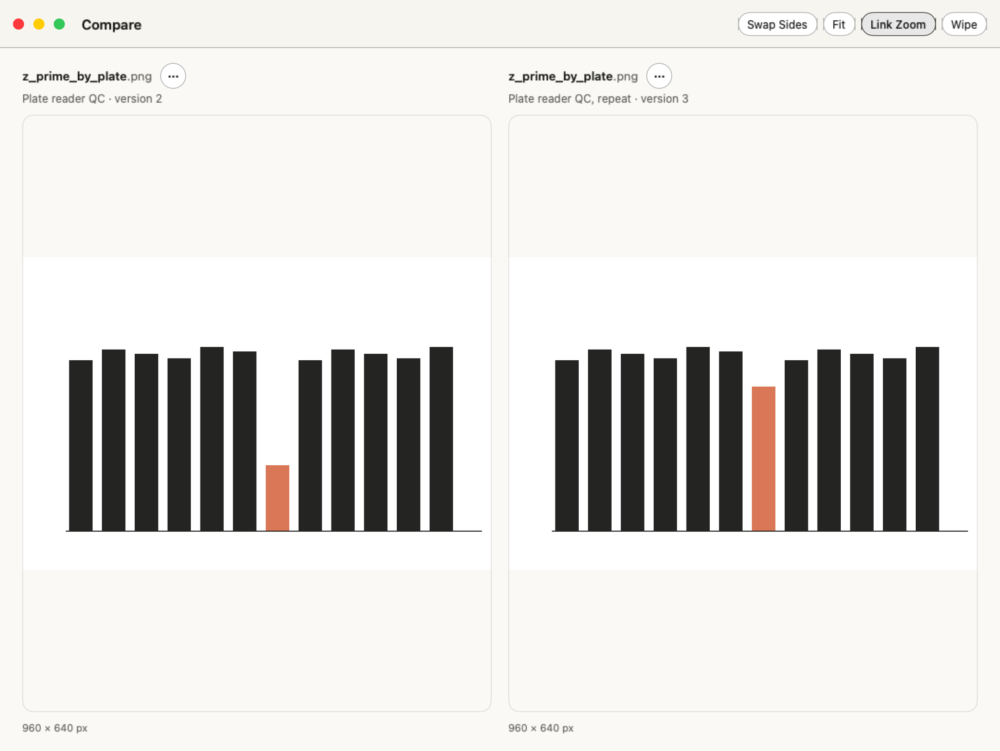
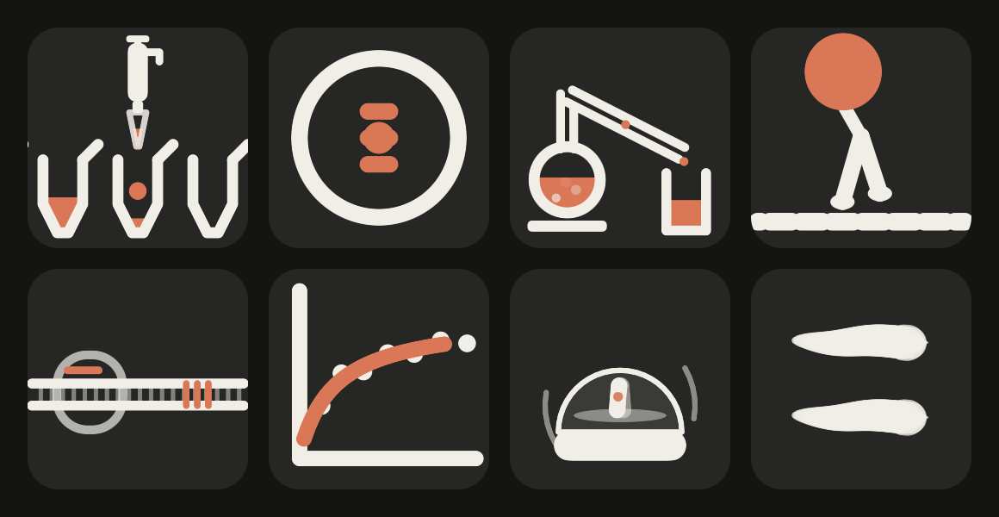
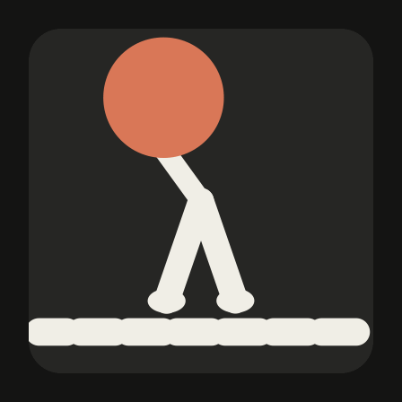
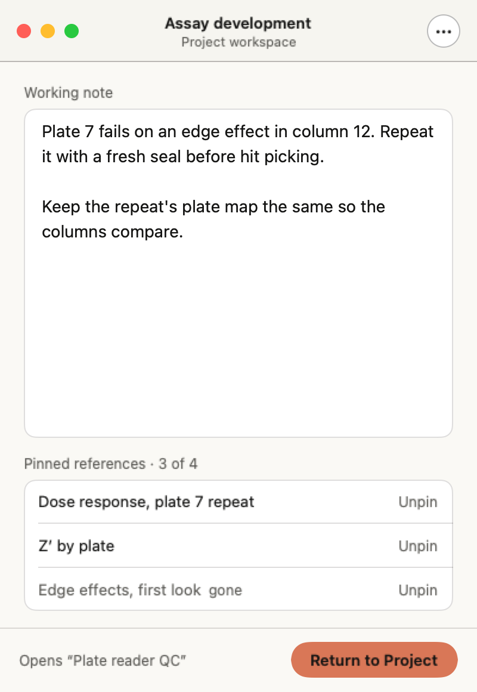

See what changed.
Pick two pictures or text files on the Shelf and choose Compare. Link the image zoom, slide a wipe between matching image sizes, or step through text changes line by line.


See the text comparison preview → SOLANUM
SOLANUM
Keep your conversations, results and working context together. Capsid gives Claude Science a native Mac window, a Shelf for useful results, and a small glass panel that knows when a session needs you.
curl -fsSL https://raw.githubusercontent.com/samporter14/bench/main/install.sh | zsh

A kinesin motor takes another step. A gel runs. While your session works, a little lab specimen plays in the corner of your screen. Choose your favorites, or let the subject help choose.
When a session needs your input, a card takes you straight to it. Other cards tell you when your plan or context is nearly used up, or a session is paused by a usage limit.
The toolbar lists the sessions that need you, the ones still working, and the ones that recently finished.
The title bar shows how much context the open session has used, how much of your plan is left, and when it resets.
A toolbar, menus, keyboard shortcuts, Settings and Find. A lightweight app that uses the WebKit already built into macOS.
Capsid needs no separate account. Claude Science uses its own online service. GitHub updates, optional model requests and phone features have their own connections and controls. Read the privacy details.
Away from your Mac, see what needs you on your iPhone or iPad, answer a session's question, approve its plan, send it a message, and read back through its conversation and files. The connection to your Mac runs through your Tailscale network. Optional phone notifications use Apple’s push service.
How it works, and how to set it up

A figure is more useful when you can find its conversation. A project is easier to return to when its references and next thought are still together.
Pick two pictures or text files on the Shelf and choose Compare. Link the image zoom, slide a wipe between matching image sizes, or step through text changes line by line.

See the text comparison preview →Each Project Workspace keeps its last conversation, up to four pinned references and a Working Note. Return to Project brings them back together, with the Shelf showing that project. Your note saves as you work.

App previews use fictional example data. Read the Capsid 1.1 release notes.